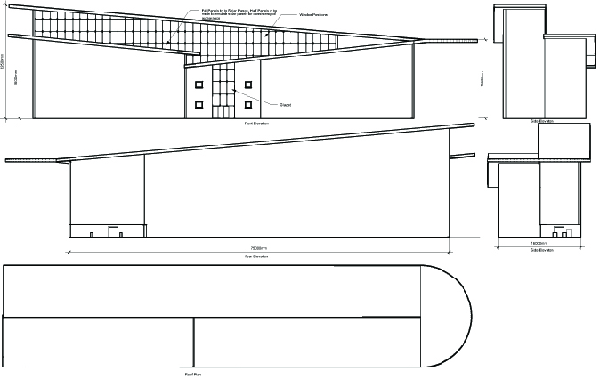
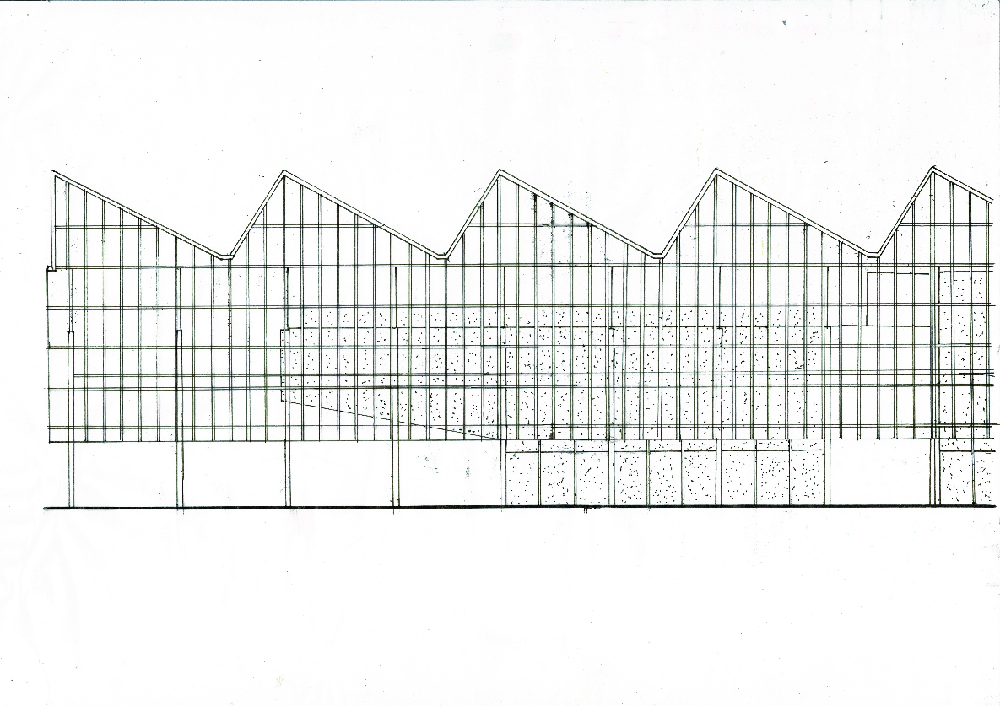
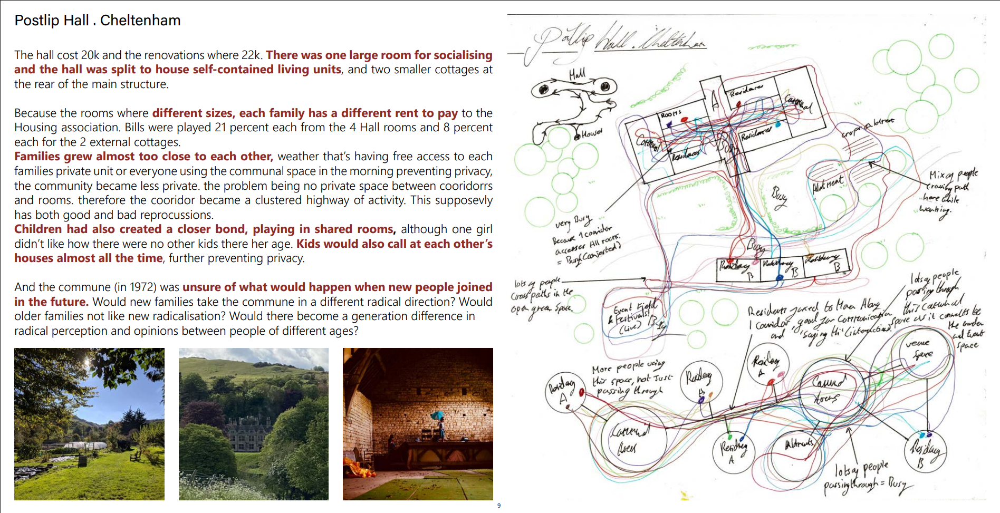
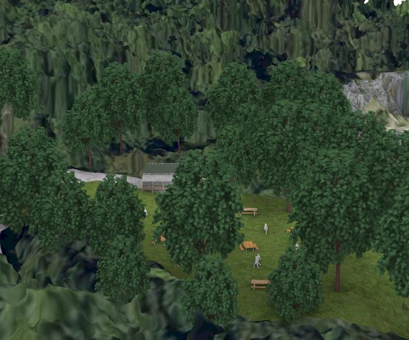
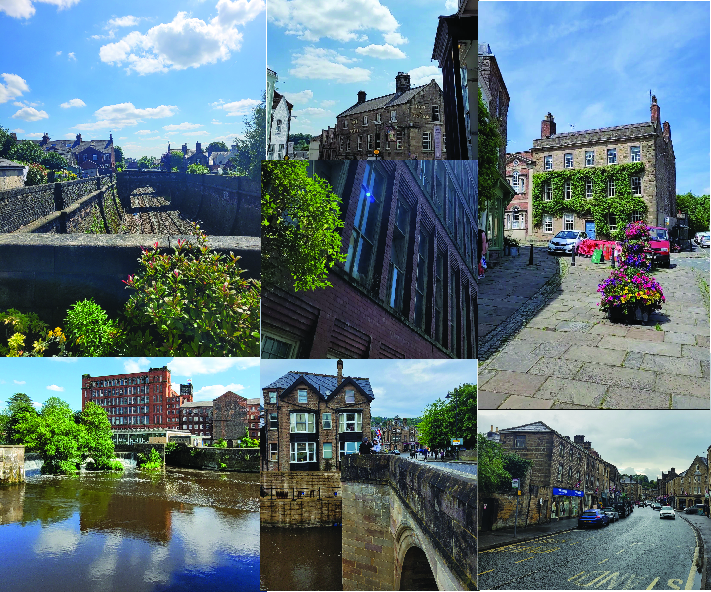
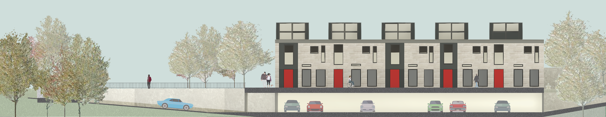
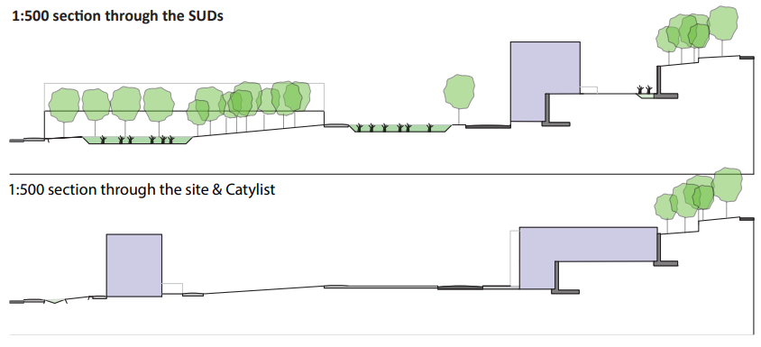
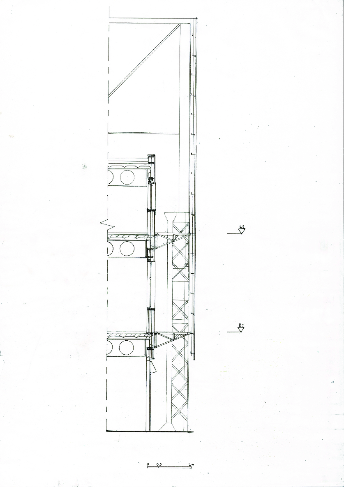

About
I’m Marlon MacDermott, a designer interested in how architecture, images and spatial ideas can help people understand the possibilities of a place.
Based in the North East of England, I work across architectural visualisation, graphic design and early-stage building concepts for rural and urban settings. I translate developing ideas into clear, engaging images that can support conversations with communities, architects, engineers and planning teams.
Selected work
Scroll through the portfolio. Select any image to open the full project and see the work in context.
 Co-Living, BykerView project →
Co-Living, BykerView project →

Conygar QuarryView project →
Art Museum, NantesView project → Relational MappingView project →
Relational MappingView project →

Urban Co-LivingView project → DerbyshireView project →
DerbyshireView project →

Climbing CentreView project →
House of the FutureView project →
Community HousingView project → Façade StudyView project →
Façade StudyView project →

Urban MappingView project → Quarry ElevationView project →
Quarry ElevationView project →
 Shared CityView project →
Shared CityView project →
 Spatial RelationshipsView project →
Spatial RelationshipsView project →

Material & LightView project →